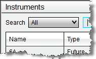
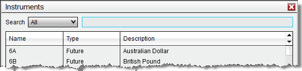
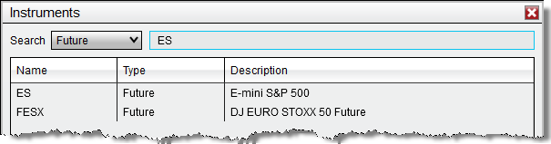

|
<< Click to Display Table of Contents >> Searching for Instruments |


|
Searching for Instruments
|
<< Click to Display Table of Contents >> Searching for Instruments |
|
NinjaTrader has a predefined database of commonly supported instruments that you can search through.
Searching InstrumentsTo search for an instrument within the database:
1. From the Instruments window, optionally select an available instrument type using the Type drop down menu to narrow down your search.

|
2. Enter any search parameters in either the Search field. Typing in capital letters will search for via the instrument name, typing in lowercase letters will search via the instrument description.
 |
3. As soon as you begin typing the Instruments window will immediately begin filtering your results.
The image below displays the results of searching for any Futures with "ES" in the instrument name.

You can double left mouse click on any search result to bring up the Instrument Editor window for the selected instrument. Please see the Editing Instruments page for more information on how to edit instruments. |